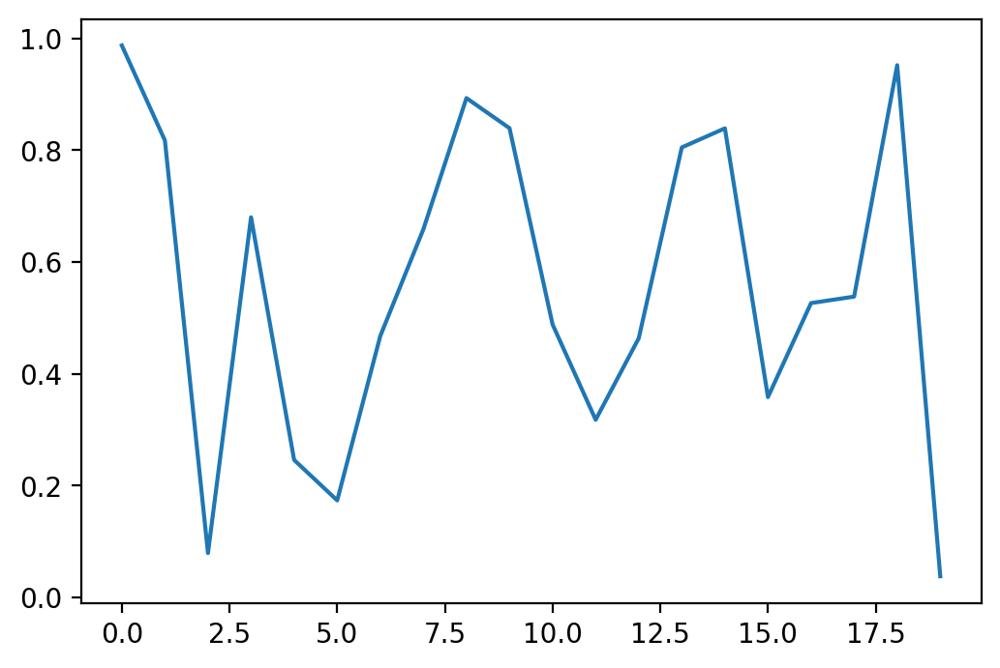

…when you want to weave together code (it doesn’t have to be R!), and narrative (efficiently written in Markdown).
Let’s demonstrate with the classic entrypoint to Python:
hello worldAnd now we’ll do something a tiny bit more complicated: use numpy to generate an array of twenty random numbers, which we’ll then use matplotlit to plot.

Now let’s add a citation (I’m using Zotero, with the BetterBibTex plugin, and citation keys in the format [authForeIni][authEtAl][year], and then exporting the bibliography as refs.bib, which needs to be saved in our bits folder) – maybe something about Jupyter notebooks (Kluyver et al. 2016) – and we can run our bash script to turn this into a publishable PDF…
# to run this from within the notebook, first comment out this line and save...
# ...and then uncomment the line to run it -- otherwise, Pweave will get stuck...
# ...in an infinite loop and be unable to finish processing the notebook
# ! ../bits/publi.sh RMarkdownKluyver, T.; Ragan-Kelley, B.; Pérez, F.; Granger, B.E.; Bussonnier, M.; Frederic, J.; et al. 2016. Jupyter Notebooks-a publishing format for reproducible computational workflows. ELPUB: 87–90.